Reflections & field reports
The complete archive of Commissioner Dr. Dennis Wamalwa's human-rights work — 101 articles spanning advocacy, reforms, intersex rights, and community engagement across Kenya and beyond. Filter by focus area below.
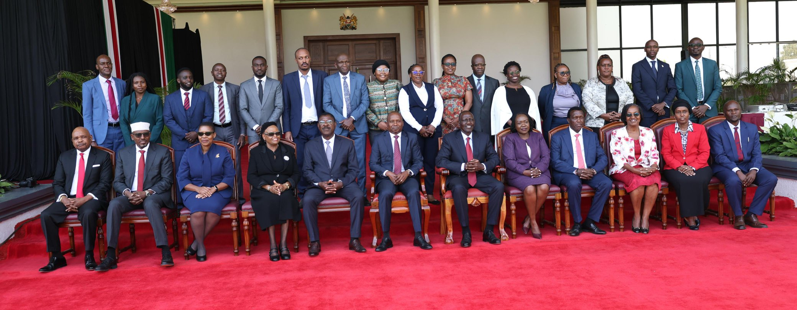
A DEFINING MOMENT FOR JUSTICE: WHY KENYA'S REPARATIONS FRAMEWORK MATTERS
By Commissioner Dr. Dennis Wamalwa Dennis Kenya National Commission on Human Rights The pursuit of justice does not end with the acknowledgment of human rights violations. True justice demands…
Read
Reparations, Verification & Public Awareness Exercise — Western Kenya
A week-long reparations verification and public-awareness exercise across eight counties in Western Kenya, under Commissioner Dr. Wamalwa's leadership.
Read
Workplace Violence is a Human Rights Issue, Not Just a Labour Concern
At the Kenya School of Government, Commissioner Dr. Wamalwa argued that workplace violence is fundamentally a human rights issue public institutions must confront.
Read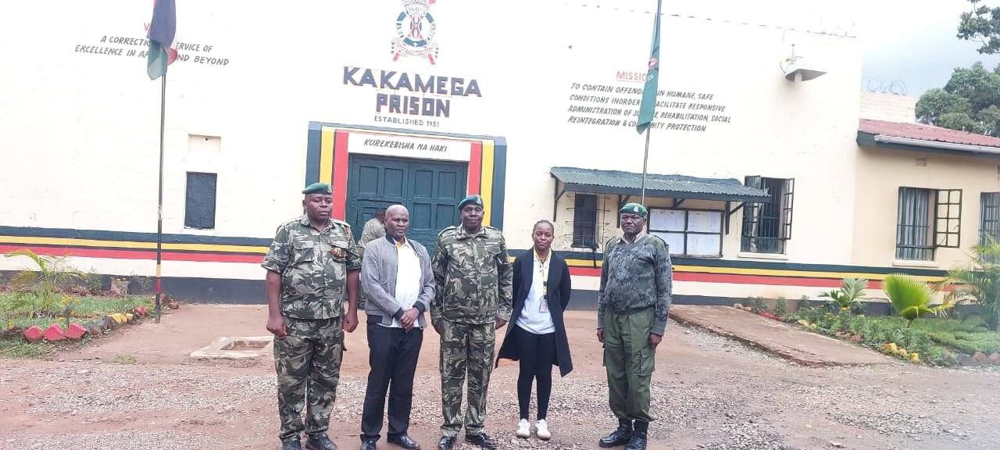
Championing Mental Health Rights in Correctional Facilities
Mental health is a fundamental human right that must be safeguarded for every individual, including those in places of detention. Across the world, correctional facilities continue to face growing…
ReadCommissioner Wamalwa Leads KNCHR to Mara University: Intersex-Rights Lecture & MOU Signing
Commissioner Dr. Wamalwa led a KNCHR delegation to Mara University, signed an MOU on human-rights education, and delivered a public lecture on intersex rights.
Read
STRENGTHENING INSTITUTIONAL COLLABORATION: KNCHR HOSTS ETHIOPIAN HUMAN RIGHTS COMMISSION FOR STUDY VISIT
From 17th to 20th February 2026 , the Kenya National Commission on Human Rights (KNCHR) hosted a high-level delegation from the Ethiopian Human Rights Commission (EHRC) at the Kimathi Board Room,…
Read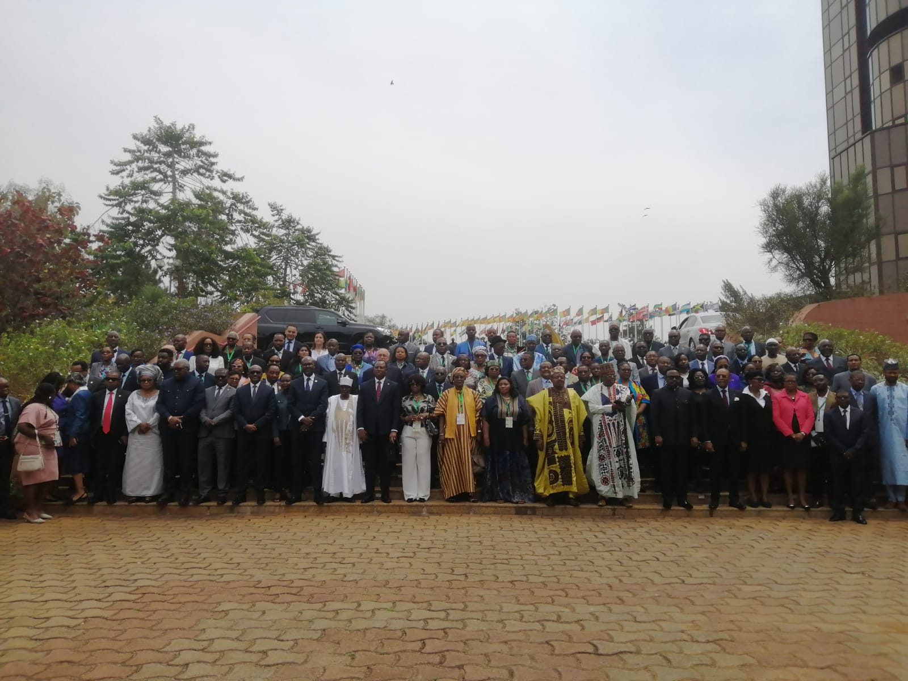
Leveraging African Human Rights Instruments and Jurisprudence: Reflections from the 15th NANHRI Biennial Conference in Yaoundé, Cameroon
Yaoundé, Cameroon | 5–6 February 2026 Commissioner Dr. Wamalwa Dennis of the Kenya National Commission on Human Rights (KNCHR) joined fellow Commissioners, judicial officers, scholars,…
Read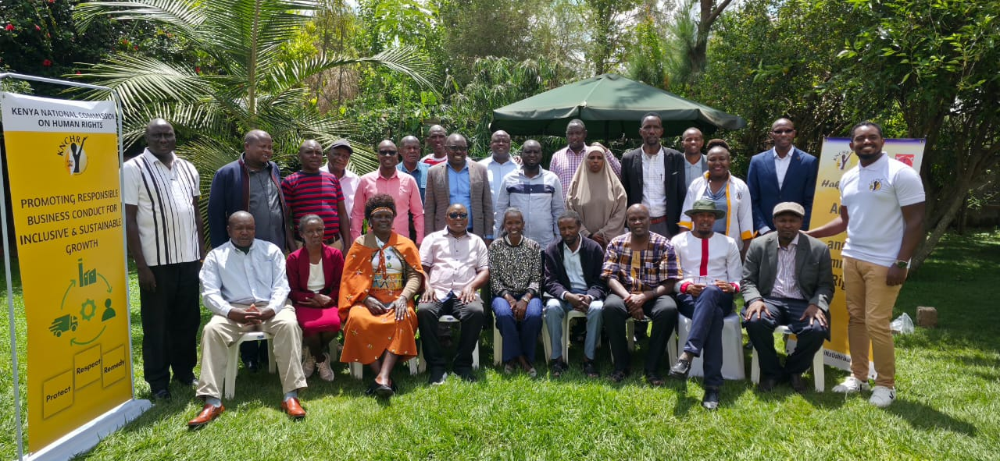
Validation of the Public Inquiry on the Impact of Business Operations on the Rights of Indigenous Peoples in Kenya
“Sustainable development in Indigenous territories is only possible where human rights, dignity, consent, and equity are fully respected by both the State and business enterprises.” Introduction…
Read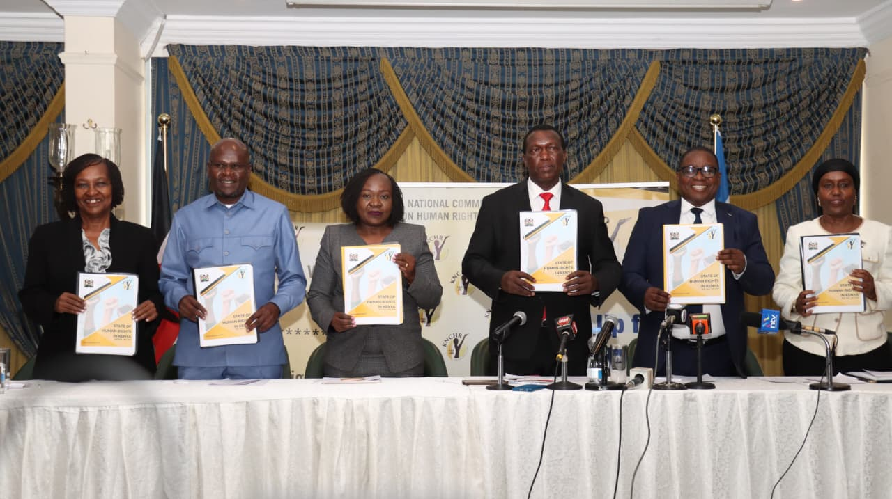
KNCHR Launches the State of Human Rights Report 2024/2025: A Call to Reinforce Accountability and Constitutionalism
Commissioner Dr. Wamalwa Dennis today joined key stakeholders for the official launch of the State of Human Rights Report 2024/2025 , a flagship publication by the Kenya National Commission on…
Read
COMMISSIONER DR. WAMALWA DENNIS PARTICIPATES IN HIGH-LEVEL ENGAGEMENT ON DISABILITY RIGHTS AT FOUR POINTS BY SHERATON.
Commissioner Dr. Wamalwa Dennis joined key national stakeholders, legislators, and disability rights experts for a strategic capacity-building engagement held at Four Points by Sheraton . The…
Read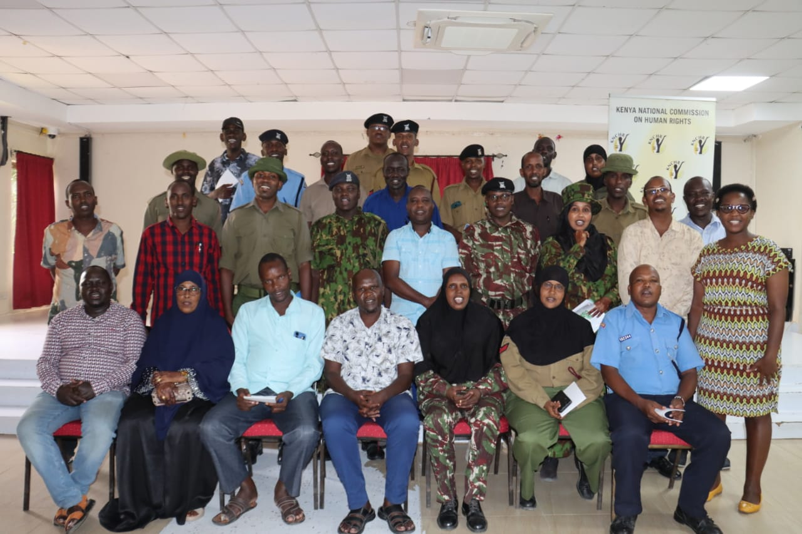
Stakeholders Call for Collective Action to End Deep-Rooted Harmful Practices in Garissa County
A stakeholder engagement forum convened by the Kenya National Commission on Human Rights (KNCHR) in Garissa has underscored the urgent need for coordinated, community-led efforts to address the…
Read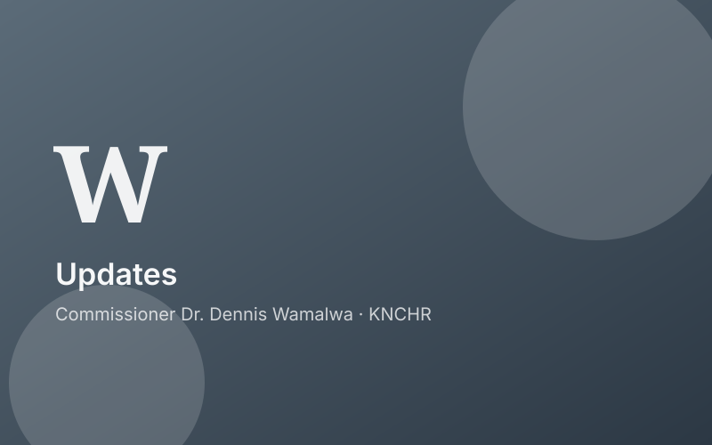
KNCHR Validates FGM Training E-Module in Garissa County
The Kenya National Commission on Human Rights (KNCHR) held a validation meeting in Garissa County to review and refine a newly developed E-Module on Female Genital Mutilation (FGM) Response and…
Read
Together for Intersex Families: Commissioner Dr. Wamalwa Dennis Joins Walk to Promote Visibility and Inclusion
In a powerful show of solidarity and advocacy, Commissioner Dr. Wamalwa Dennis of the Kenya National Commission on Human Rights (KNCHR) joined the Association of Intersex Parents Movement (AIP)…
Read
STRENGTHENING PARTNERSHIPS FOR JUSTICE AND HUMAN RIGHTS
The Director of Public Prosecutions (DPP), Mr. Renson Ingonga, CBS, OGW, today hosted the leadership of the Kenya National Commission on Human Rights (KNCHR), led by its Chairperson, Ms. Claris…
ReadUGANDAN LEGISLATORS BENCHMARK ON KENYA’S PROGRESS IN PROTECTING INTERSEX RIGHTS
On 28th October 2025, the Kenya National Commission on Human Rights (KNCHR) hosted a delegation of Ugandan legislators who visited Kenya to benchmark on the country’s significant strides in the…
Read
KNCHR Welcomes New Chairperson, Ms. Claris Ogangah
The Kenya National Commission on Human Rights (KNCHR) has officially welcomed its new Chairperson, Ms. Claris Ogangah , following her swearing-in ceremony presided over by Chief Justice Martha…
ReadStrengthening the Fight Against Corruption: ODPP Unveils New Guidelines
Kenya has taken a bold step forward in the fight against corruption and misuse of public resources. The Office of the Director of Public Prosecutions (ODPP) has launched the Guidelines on the…
Read
Strengthening Intersex Advocacy Through Institutionalization: Follow-Up Meeting on Establishing an Intersex-Focused NGO
On 26th August 2025, Commissioner Dr. Wamalwa Dennis convened a follow-up meeting at CVS Plaza alongside Tara Ndichu and Advocate Ojiambo to deliberate on the next steps towards establishing a…
Read
Advancing Intersex Rights: Stakeholders’ Meeting on Advocacy, Institutional Development, and Legislative Engagement
On 22nd August 2025, a consultative meeting was convened to deliberate on strengthening intersex advocacy in Kenya and beyond. The session brought together key stakeholders committed to advancing…
Read
Driving Equity, Inclusion, and Social Justice: Commissioner Dr. Wamalwa Dennis at the Devolution Conference 2025 Homa Bay County, Kenya. August 12–15, 2025.
The serene lakeside city of Homa Bay transformed into a national hub of dialogue and decision-making as leaders, policymakers, development partners, civil society, and private sector actors…
Read
Enhancing Access to Justice through Public Participation: Reflections from Nyeri and Garissa on the Draft Complaints and Enforcement Regulations 2025
The Kenya National Commission on Human Rights (KNCHR) continues to uphold its constitutional mandate by promoting and protecting the fundamental rights and freedoms of all Kenyans. A key part of…
Read
KNCHR Intensifies Public Participation on Draft Complaints and Enforcement Regulations 2025 in Uasin Gishu and Nakuru Counties.
In a significant step toward enhancing human rights accountability in Kenya, the Kenya National Commission on Human Rights (KNCHR) has intensified its public participation exercise on the…
ReadAdvancing Disability Rights: Commissioner Dr. Dennis Wamalwa Leads Strategic Engagement with Parliamentarians June 2025 In a concerted effort to promote and protect the rights of persons with…
Read
A Grace-Filled Day: Bishop’s Pastoral Visit Unites Faith, Leadership, and Community at EECC
A Grace-Filled Day: Bishop’s Pastoral Visit Unites Faith, Leadership, and Community at EECC On Thursday, 29th May 2025, the Emmanuel Education and Community Centre (EECC) was blessed to host a…
Read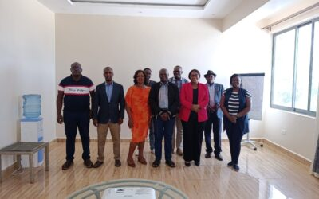
REPORT ON THE VALIDATION WORKSHOP OF THE BUSINESS AND HUMAN RIGHTS CURRICULUM AND TRAINING MANUAL FOR BUSINESSES IN KENYA
Date: 19th–20th May 2025 Venue: A & L Conference Centre, Machakos Organized by: Kenya National Commission on Human Rights (KNCHR) 1. Introduction The Kenya National Commission on Human Rights…
Read
EMPOWERING CONVERSATIONS ON INTERSEX RIGHTS: DR. DENNIS WAMALWA’S LECTURE AT THE EMBULBUL EDUCATIONAL & COUNSELLING CENTER, KAJIADO COUNTY.
On May 8, 2025, Commissioner Dr. Dennis Wamalwa delivered a compelling public lecture titled “Understanding the Intersex and Human Rights in a Therapeutic Context” at the Embulbul Educational &…
ReadThanksgiving Ceremony Honoring SRC Commissioner Leonid Ashindu Held in Butere
From the Streets to State Office: The Extraordinary Rise of Commissioner Leonid Ashindu In a country where the paths to leadership are often assumed to be paved with privilege, the story of…
Read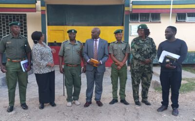
Upholding Dignity Behind Bars: Commissioner Dr. Dennis Wamalwa Leads Human Rights Audit Across Kenyan Prisons
In a week marked by powerful emotions and renewed commitments, the Kenya National Commission on Human Rights (KNCHR), under the leadership of Commissioner Dr. Dennis Wamalwa , conducted a series…
Read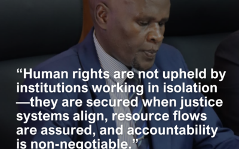
“Words That Lead: Powerful Quotes from Commissioner Wamalwa’s Human Rights Advocacy Journey”
Read
A Journey of Purpose: Commissioner Dr. Dennis Wamalwa’s Impactful Presence at the Centre for Human Rights, University of Pretoria
From the moment my boarding pass was issued for Johannesburg on 9 April 2025 , I knew I wasn’t just traveling—I was carrying a message, a mission, and the voices of intersex persons across Africa…
ReadAdvancing Environmental and Human Rights in Africa: Insights from the GDC Africa Forum 2025
Introduction The Global Democracy Coalition Africa Forum 2025 , held on March 28 at Daystar University, Nairobi , brought together a diverse array of voices from across the continent to reflect on…
Read
Strengthening Justice and Human Rights: KNCHR Engages Office of the Attorney General
Introduction In a significant step towards reinforcing human rights protection and enhancing the rule of law in Kenya, the Kenya National Commission on Human Rights (KNCHR) led by Vice Chairperson…
ReadAdvancing Mental Health Rights through Data: Commissioner Dr. Wamalwa Dennis at Strathmore University Workshop
Commissioner Dr. Wamalwa Dennis had the honor of leading a workshop on mental health and data collection at Strathmore University. The event, held in collaboration with Strathmore University’s…
ReadChampioning Gender Parity: Commissioner Dr. Wamalwa Dennis at International Women’s Day 2025
Gender parity is key to human rights! At KNCHR, gender representation is at the core of human rights advocacy. With a 50% gender-balanced workforce, diverse hiring practices, and a multi-sectoral…
ReadStrengthening Human Rights Partnerships: KNCHR Engages UN Resident Coordinator and OHCHR Country Representative
In a continued effort to enhance human rights promotion, redress, and accountability, my team at the Kenya National Commission on Human Rights (KNCHR) and I had a highly productive meeting with…
ReadKNCHR Submits Budget Policy Statement for FY 2025-2026 in Parliament
The Kenya National Commission on Human Rights (KNCHR), under the leadership of Commissioner Dr. Wamalwa Dennis submitted its Budget Policy Statement for the Financial Year 2025-2026 to the…
ReadCOUNSELLING THE INTERSEX with Dr. Dennis Wamalwa
Read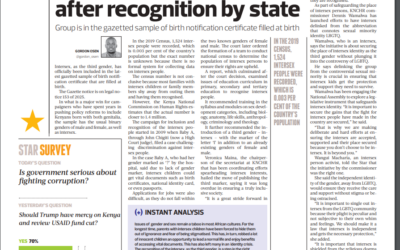
A Historic Win for Intersex Recognition in Kenya
Kenya has taken a monumental step in recognizing and protecting the rights of intersex persons. For the first time, intersex individuals have been officially included in the gazetted sample of…
ReadCommissioner Dr. Wamalwa Dennis Attends Parliamentary Meeting on the Assembly and Demonstration Bill, 2024
On 18th February 2025, Commissioner Dr. Wamalwa Dennis (KNCHR) attended a critical parliamentary meeting at the National Assembly, where the Commission submitted its advisory on the Assembly and…
ReadCounselling the Intersex: A Transformative Session at CITAM Rongai, Nairobi.
On 16th February 2025, Commissioner Dr. Dennis Wamalwa facilitated a thought-provoking and impactful session at Christ is the Answer Ministries (CITAM) Rongai, focusing on "Counselling the…
Read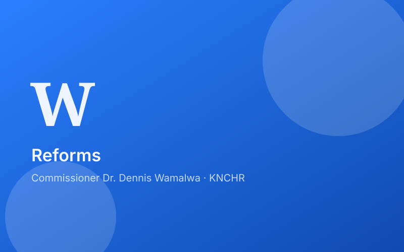
Commissioner Dr. Wamalwa Dennis Hosts Koinonia Old Boys Welfare Association (KOBWA) Members at CVS Plaza, Nairobi
On 17th January 2025, Commissioner Dr. Wamalwa Dennis had the honor of hosting members of the Koinonia Old Boys Welfare Association (KOBWA) at CVS Plaza, Nairobi. The gathering brought together…
Read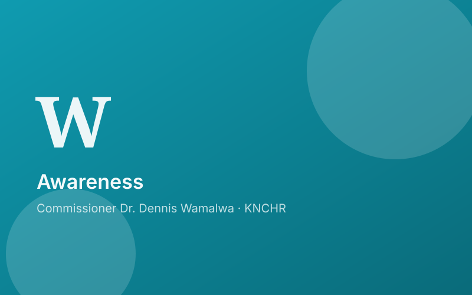
Breaking Barriers, Building Bridges: Dr. Wamalwa Dennis Crusade for Intersex Rights in Kenya. Interview with NTV Host Lofti Matambo
Introduction: Championing Intersex Rights in Kenya In a significant conversation broadcasted on NTV Kenya, Commissioner Dr. Wamalwa Dennis, a dedicated advocate for Intersex rights, engaged in an…
ReadMedia Interviews & Engagements – Commissioner Dr. Wamalwa Dennis
Welcome to my media archive, where you can access interviews, discussions, and key media engagements on human rights, intersex recognition, mediation, and governance. These conversations reflect…
ReadCommissioner Dr. Wamalwa Dennis Participates in Intersex Organizational Development and Systems Strengthening Workshop
From 28th to 31st October 2024, Commissioner Dr. Wamalwa Dennis participated in the Organizational Development and Systems Strengthening Workshop organized by Jinsiangu at their offices. The…
Read
Commissioner Dr. Wamalwa Dennis Attends Koinonia Community General Assembly at Tone la Maji , Kibera in Nairobi county
Commissioner Dr. Wamalwa Dennis participated in the Koinonia Community General Assembly at Tone la Maji , engaging with community members and stakeholders on key human rights issues. The assembly…
ReadTRAINING CITAM COUNSELLORS ON MATTERS INTERSEX A MILESTONE FOR INCLUSIVE COUNSELLING
In a significant step towards fostering inclusivity and understanding, Commissioner Dr. Wamalwa Dennis led a training session for CITAM counsellors at CITAM Kadolta Resort on matters intersex. The…
ReadREFLECTIONS ON "BORN IN BETWEEN": ADVANCING THE RIGHTS OF INTERSEX PERSONS IN AFRICA
On Friday, 24th January 2025, Commissioner Dr. Dennis Wamalwa of the Kenya National Commission on Human Rights (KNCHR) participated in an insightful and engaging discussion titled "Born in…
ReadAfrican Intersex Movement (AIM) Board Meeting at Hill Park Hotel, Nairobi
The African Intersex Movement (AIM) convened a strategic meeting at Hill Park Hotel, Nairobi, bringing together board members to deliberate on the progress, challenges, and future of intersex…
ReadCommissioner Dr. Wamalwa Dennis attends the Rabat Forum on Humanized Border Management
Introduction Commissioner Dr. Wamalwa Dennis participated in the high-level forum on Humanized Border Management & Vulnerability Management , engaging with global experts on migration governance,…
ReadThe inner conflict: Sruggles of the intersex people in sports
https://youtu.be/QW3qpKewELk?si=S7W8wKwa-_xwANVY
ReadCommunication Interactive Session at Kimathi Boardroom Chaired by Commissioner Dr. Wamalwa Dennis
A dynamic and insightful communication interactive session, chaired by Commissioner Dr. Wamalwa Dennis, took place at the Kimathi Boardroom, bringing together staff members of the Kenya National…
Read
"Empowering Voices: My Journey to Gambia and the Fight for Human Rights Across Africa"
My recent trip to Gambia was nothing short of transformative. From the moment I landed, I felt a sense of purpose and anticipation, knowing that this journey would contribute significantly to my…
ReadCommissioner Dr. Wamalwa during the KNCHR, UNDP, USAID & IRCK Sensitization Meeting on Intersex Rights at Pride Inn Paradise, Mombasa.
Introduction Commissioner Dr. Wamalwa Dennis had the privilege of attending the KNCHR & IRCK Sensitization Meeting on Intersex Rights held today at Pride Inn Paradise, Mombasa. This pivotal…
ReadCommissioner Dr. Wamalwa on Intersex Spice FM
ReadIntersex Bill 2023 with Comissioner Dr. Dennis Wamalwa Citizen TV
The Intersex Persons Bill 2023 drafted by the Kenya National Commission on Human Rights seeks to introduce Intersex as a third gender marker, at a time when the group is fighting for recognition…
ReadPROGRESS IN INTERSEX RIGHTS: A CRUCIAL STEP FORWARD WITH THE INTERSEX PERSONS BILL, 2024
In a significant move towards securing the rights and recognition of intersex persons in Kenya, Commissioner Dr. Wamalwa Dennis chaired a pivotal meeting of the Intersex Persons Implementation…
ReadTHE PUBLIC INQUIRY INTO THE IMPACT OF BUSINESS OPERATIONS ON THE RIGHTS OF INDIGENOUS PEOPLE IN THE NORTH RIFT REGION.
Introduction From 23rd July to 31st July 2024, Commissioner Dr. Wamalwa Dennis, participated in a Public Inquiry organized by the Kenya National Commission on Human Rights (KNCHR) to examine the…
ReadEngagement with Muthaiga Rotary Club on the Plight of Intersex Children in Africa.
Introduction On 8th July 2024, Commissioner Dr. Wamalwa engaged with members of the Muthaiga Rotary Club to address the critical issue of the plight of intersex children in Africa. This engagement…
Read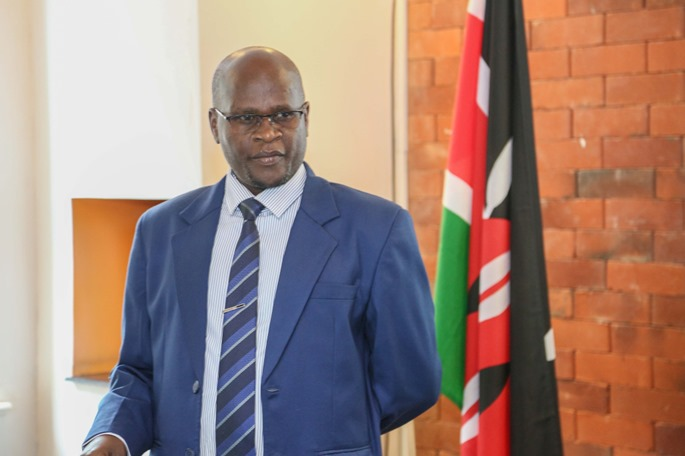
Presentation of Intersex advocacy journey to the Gambian Commissioners During Their Benchmarking Visit to KNCHR
Introduction On 5th August 2024, Commissioner Dr. Wamalwa Dennis had the honor of presenting to a delegation of Gambian Commissioners who were visiting the Kenya National Commission on Human…
Read
A 3-Day Circle Meeting by Shalom Center for Counselling and Development and Akili Mali Associate
In a quest to promote social healing in communities affected by various societal conflicts including violent extremism, gender-based violence (GBV), drug and substance abuse, tribal clashes, and…
ReadAddressing the Plight of Intersex Children in Africa
Introduction Commissioner Dr. Wamalwa Dennis (KNCHR) recently engaged with members of the Muthaiga Rotary Club at the Jacaranda Hotel in Westlands. The focus of this engagement was on raising…
ReadMeeting with L'africana organization: strengthening support for the Congolese community in Kenya.
Introduction Commissioner Dr. Wamalwa Dennis had a fruitful meeting with Lokole Simbi and Benjamin Sango from L'africana Organization. This engagement marks a significant step towards fostering…
ReadCollaborative Meeting Between KNCHR Commissioners and NCPWD CEO
Commissioner Dr. Wamalwa Dennis, alongside Hon. Sara Bonaya, and CEO Bernard Mogesa of the Kenya National Commission on Human Rights (KNCHR), recently engaged in a fruitful collaborative meeting…
ReadDay Two of the African Intersex Movement (AIM) 2024 Strategic Meeting: A Triumph!
Introduction Day two of the AIM 2024 strategic meeting was a resounding success! We engaged in comprehensive discussions on various crucial aspects, ensuring that our mission stays on track and…
ReadAfrican Intersex Movement (AIM) Strategic Meeting at Hill park hotel, Nairobi.
Introduction As an esteemed member of AIM (African Intersex Movement), Dr. Wamalwa has been instrumental in advancing intersex rights and inclusion across the The African region with Frankie from…
ReadIntersex and Emerging Issues on Mental Health
Introduction Commissioner Dr. Wamalwa Dennis (KNCHR) held a highly informative and impactful Teams meeting with the staff of the Witness Protection Agency (WPA). The focus of the meeting was on…
ReadEmpowering Intersex Persons on skill development
Introduction Commissioner Dr. Wamalwa (KNCHR) hosted a skill development meeting aimed at empowering intersex persons. The event served as a platform to address the unique challenges faced by…
ReadCollaborative Pathways: Insights from the Consultative Forum at Lake Naivasha
Introduction Recently, a significant gathering took place at the Lake Naivasha Resort, where the Executive arm of the government and the Constitutional Commissions and Independent Offices (CCIOs)…
ReadUpholding Human Rights in Shakakhola: KNCHR's Critical Mission
Introduction Under the dedicated leadership of Commissioner Dr. Wamalwa Dennis, the Kenya National Commission on Human Rights (KNCHR) embarked on a significant mission to monitor the Shakakhola…
ReadBreaking Barriers, Building Bridges: Dr. Wamalwa Dennis's Crusade for Intersex Rights in Kenya. Interview with Citizen TV Host Lofti Matambo
Introduction: Championing Intersex Rights in Kenya In a significant conversation broadcasted on NTV Kenya, Commissioner Dr. Wamalwa Dennis, a dedicated advocate for Intersex rights, engaged in an…
ReadPromoting Health Rights for Intersex Persons in Kenya: Insights from a Continuing Medical Education Event
Introduction In a significant step toward addressing healthcare disparities, Commissioner Dr. Wamalwa Dennis inaugurated a Continuing Medical Education (CME) event at Makueni Level 5 County…
ReadEnhancing Healthcare Access: Exploring a Partnership with the Government Chemist for Intersex Health Services
In a significant stride towards improving healthcare services for marginalized communities, Commissioner Dr. Wamalwa recently convened a pivotal meeting with Dr. Kimani at the Government Chemist…
ReadAdvancing Healthcare for Intersex Persons: Exploring a Potential Partnership Between KNCHR and KEMRI
Introduction Commissioner Dr. Wamalwa Dennis recently engaged in a fruitful meeting with Mrs. Eva Aluvaala, a distinguished scientist from the Kenya Medical Research Institute (KEMRI), at Bishop…
ReadStrengthening Human Rights in Kwale County: A Groundbreaking Partnership
A Meeting of Minds In an inspiring display of commitment to human rights, Kwale County recently became the focal point of a significant meeting. Dr. Wamalwa Dennis, a Commissioner at the Kenya…
ReadStrengthening Human Rights in Kilifi County: A Collaborative Vision
Introduction: A Pioneering Dialogue In a landmark meeting that underscored the commitment to human rights in Kenya, Commissioner Dr. Wamalwa Dennis, Chairperson Roseline Odede, and other esteemed…
ReadAdvancing Human Rights in Kenya, Mombasa County: A Collaborative Approach
Introduction: A Vital Gathering in Mombasa In the vibrant city of Mombasa, a pivotal meeting unfolded that could shape the future of human rights in Kenya. Commissioner Dr. Wamalwa Dennis,…
ReadEmpowering the Future: The Landmark Initiative of Commissioner Dr. Wamalwa
In an era where inclusivity and equal opportunities are at the forefront of societal advancement, Commissioner Dr. Wamalwa's recent endeavor at the Toolkit for Skills and Innovation Hub marks a…
ReadSteering Excellence: Commissioner Wamalwa Dennis Chairs Pivotal HR/Admin/Finance Meeting
Introduction: Commissioner Dr. Wamalwa Dennis, a distinguished professional with extensive experience in governance and leadership, recently took the helm at a crucial HR/Admin/Finance meeting…
ReadLaunch of Various Reports by the National Gender and Equality Commission
Introduction The National Gender and Equality Commission (NGEC), in line with its constitutional mandate, is set to launch a series of crucial reports addressing key aspects of gender equality and…
Read
Promoting Intersex Rights in Africa: A Recap of Commissioner Wamalwa's Facitation Training in Pretoria, South Africa.
Date: November 24, 2023 Location: Southern Sun, Pretoria, South Africa Introduction On the 24th of November, 2023, the Southern Sun in Pretoria hosted a pivotal session on human rights advocacy.…
Read
Embracing Diversity: The Intersection of Law and Society
A Milestone in Legal Reform: The Intersex Persons Bill, 2023 The "Revised Intersex Persons Bill, 2023" marks a revolutionary step in the legal recognition and protection of intersex persons in…
Read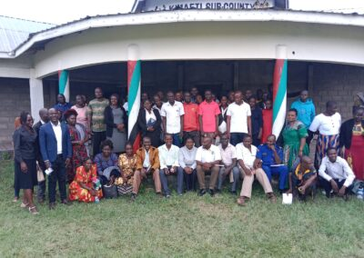
Championing Human Rights in Kimaeti: A Forum for Change
In the heart of Bungoma County, the Kimaeti Sub County community gathered for a significant forum, spearheaded by Commissioner Dr. Wamalwa. The event, set against the backdrop of the lush Kenyan…
Read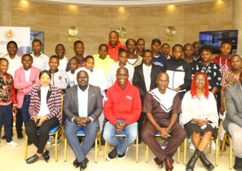
Empowering Intersex Persons: A Collaborative Training for Life and Employability Skills
Empowerment and Skill Development: The Intersex Experience at Swiss Lenana Mount Hotel Between October 30th and November 3rd, 2023, and subsequently from November 6th to 10th, Swiss Lenana Mount…
Read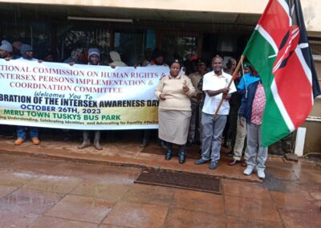
Commemorating Intersex Awareness Day 2023: A Milestone in Human Rights Advocacy in Kenya
Introduction On October 26, 2023, the Municipal Bus Park in Meru Town, Meru County, became the epicenter of a significant human rights event. The occasion was the commemoration of Intersex…
Read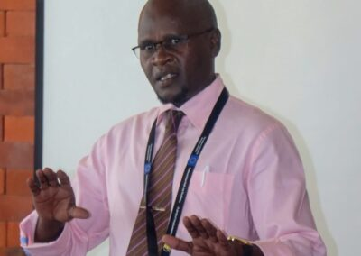
"Intersex Rights Advocacy and Policy Reform in Zambia: A Recap of Commissioner Dr. Dennis Wamalwa's Visit"
Title: "Intersex Rights Advocacy and Policy Reform in Zambia: A Recap of Commissioner Dr. Dennis Wamalwa's Visit" Introduction: In September 2023, the Intersex Society of Zambia (ISSZ) and the…
Read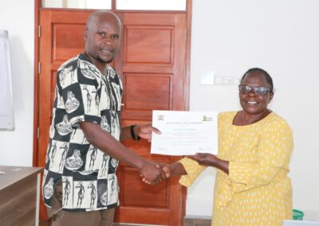
<strong>Empowering Commissioners: A Collaborative Training Program by Kenya School of Government and Kenya National Commission on Human Rights</strong>
Introduction: The landscape of corporate governance is ever-evolving, demanding adept leadership and a deep commitment to ethics and integrity. In a groundbreaking collaboration, the Kenya School…
Read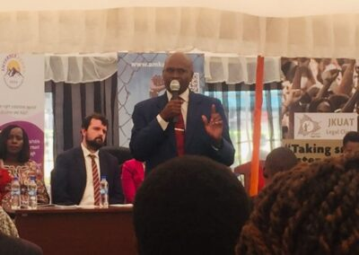
"Championing Intersex Sexual and Reproductive Health Rights in Kenya: The Amka Africa Moot Court Competition"
Introduction: In a landmark event held on September 29th, 2023, the Jomo Kenyatta University of Agriculture and Technology (JKUAT), in collaboration with the Kenya National Commission on Human…
Read<strong>Bridging Paths to Peace: The Successful Collaboration of Interpeace and KNCHR</strong>
"Harmony in Collaboration: Lessons from the Interpeace-KNCHR Meeting" In an era where global conflicts often dominate headlines, it's heartening to witness collaborations that signify hope and…
Read
Setting the Stage: Understanding the Intersex Narrative in Kenya
In an enlightening discussion hosted by the celebrated anchor, Victoria, on Citizen TV, a trio of knowledgeable guests met to dismantle the stigma surrounding intersex individuals in Kenya and…
Read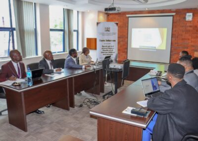
Commissioner Dr. Wamalwa Dennis Meets with Key Watch Ghana: A Benchmark Discussion
Commissioner Dr. Wamalwa Dennis recently welcomed delegates from Key Watch Ghana, a pivotal organization in the human rights sector. The delegates were in town to engage in a benchmark discussion…
Read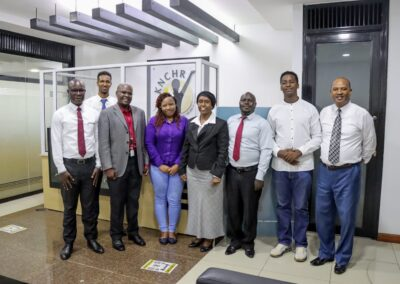
Peace, Art, and Youth: A New Approach to Curb Banditry and Cattle Rustling in Baringo County, Kenya
Introduction The Kenya National Commission on Human Rights, represented by Commissioners Dr. Dennis Wamalwa & Sara Bonaya, in collaboration with Epuka Ugaidi, a youth-based Civil Society…
Read
Remarks by Leader of Delegation- Commissioner Dr. Wamalwa on Persons with Disabilities Bill, 2023
Commissioner Dr. Dennis Wamalwa led a delegation on 18th April 2023 to make oral submissions before the Senate Committee on Labour and Social Welfare regarding the Persons with Disabilities Bill,…
Read
Kenya National Commission on Human Rights: Lest We Forget
Kenya National Commission on Human Rights: Lest We Forget The Kenya National Commission on Human Rights (KNCHR) has released a statement condemning the recent cases of unwarranted violence and…
ReadIPICC Holds Third Statutory Meeting to Prepare for Public Participation on Intersex Persons Bill 2023
Background The Intersex Persons Committee of Kenya (IPICC) held its third statutory meeting at the Sarova Panafric Hotel in Nairobi on Wednesday, March 24th, 2023. The meeting, chaired by Cmmr.…
Read
Uniting for Change: Empowering Intersex Persons in Kenya through Collaborative Action.
Key stakeholders come together to uplift the lives of intersex individuals Introduction In a groundbreaking meeting held on 23rd March 2023, five organizations joined forces to create a robust…
ReadEmpowering Kenya National Commission on Human Rights Staff: A Training and Exchange Programme Initiative
Introduction: Investing in Our Human Resource The Kenya National Commission on Human Rights (KNCHR) understands the importance of investing in its human resource. In this regard, a staff training…
ReadLaunching the Booklet on Mental Health and Psychosocial Support within the Criminal Justice System
A Milestone in Mental Health and Disability Rights As a commissioner at the Kenya National Commission on Human Rights (KNCHR), I recently had the honor, alongside my fellow commissioner Hon. Sarah…
ReadKNCHR and University of Kabianga sign MOU to promote research and outreach programs
Introduction On March 28th, 2023, the Kenya National Commission on Human Rights (KNCHR) and the University of Kabianga signed a Memorandum of Understanding (MOU) with the aim of promoting joint…
Read
Empowering Intersex Persons in Kenya: Insights from the IPICC Meeting on 2022 August Election Observation
A. INTRODUCTION The Intersex Persons Implementation Coordination Committee (IPICC) was appointed to coordinate the implementation of the recommendations from the final report of the Taskforce on…
ReadUniting for Equality: How Jinsiangu and Amka Africa Initiative are Championing the Rights of Intersex Persons in Kenya
Introduction On 16th February 2023, Commissioner Dr. Dennis Wamalwa, who is a member of the Kenya National Commission on Human Rights (KNCHR), paid a visit to Jinsiangu organization's offices…
Read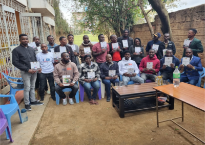
Commissioner Wamalwa and IPICC member Gloria Host BROSHERE Community Team in Nrb to Discuss Intersex Rights and IT Opportunities
Recently, Commissioner Dr. Wamalwa and IPICC member Gloria had the pleasure of hosting the team of BROSHERE COMMUNITY in Nrb, led by Peter Simboni and Loyed Mwandiki. They discussed areas of…
Read